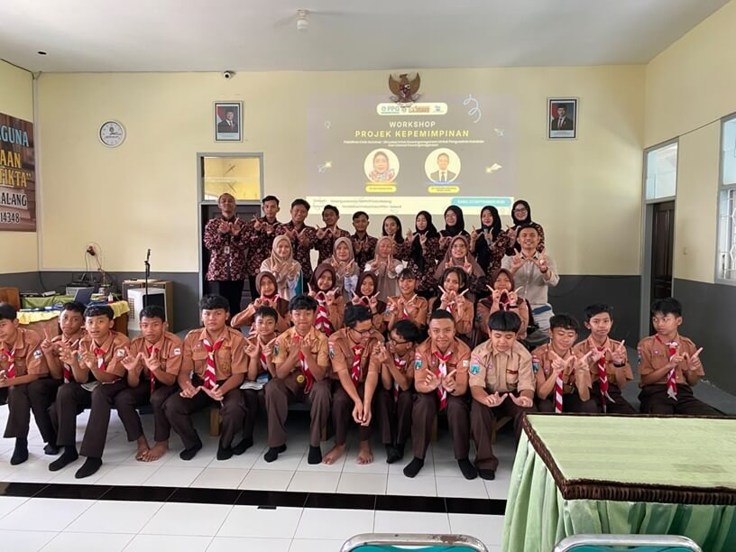
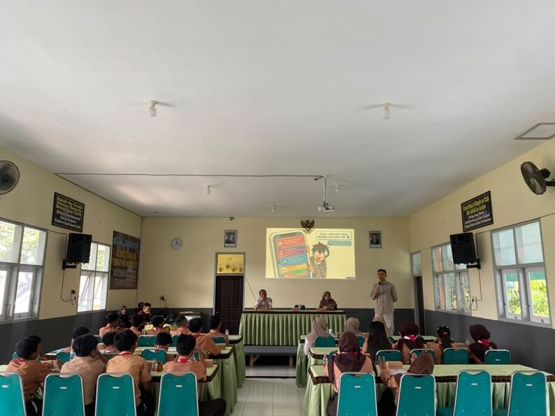
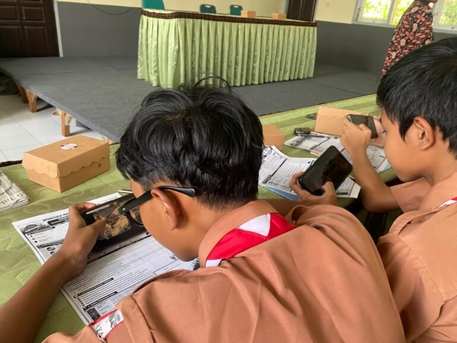
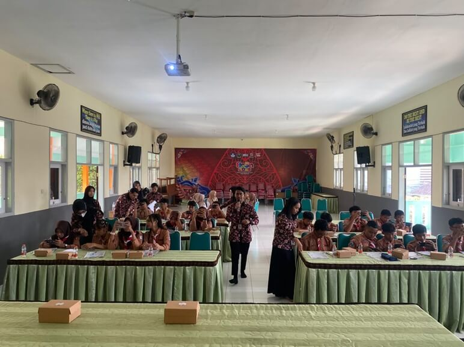
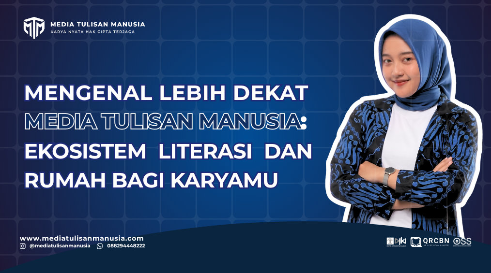

Civic Survivor: Mahasiswa PPG Program Studi PPKn Universitas PGRI Kanjuruhan Malang Kenalkan Simulasi Krisis Kewarganegaraan berbasis Game untuk Siswa SMP
Penulis: Mahasiswa PPG PPKn Kelas B

Malang, 23 September 2026 – Mahasiswa Program Pendidikan Profesi Guru (PPG) Pendidikan Pancasila Kelas B Universitas PGRI Kanjuruhan Malang melaksanakan proyek kepemimpinan bertajuk Civic Survivor di SMP Negeri 19 Malang, Rabu (23/9/2026). Kegiatan ini berlangsung di bawah bimbingan dosen pengampu mata kuliah Projek Kepemimpinan, Ibu Dr. Yulianti, M.Pd.
Proyek ini dilaksanakan oleh sebelas mahasiswa PPG, yaitu Muhammad Salman, Masfuh Hisyam, Herin Ratna Rahmadhanik, Fistra Deka Elvira, Kinanda Pandu Listanto, M. Ma'rifani, Lidia Nora Putarato, Khomsiyatil Askinah, Mochammad Sukma Mahdi Mawahib Ali Sa'bana, M. Charis Azizur Rohman Zamzami, dan Nelsa Doreenda Oktafiane.
Kegiatan ini mengangkat tema pengembangan sikap dan pemahaman karakter kewarganegaraan melalui simulasi krisis. Medianya adalah Civic Survivor, permainan edukatif berbasis situs web. Lewat permainan ini, siswa diajak mengenali berbagai situasi kewarganegaraan, kemudian menentukan tindakan yang sesuai dengan nilai-nilai kewarganegaraan dalam kehidupan sehari-hari.
Pembelajaran PPKn yang Tidak Berhenti pada Materi
Kegiatan ini berangkat dari kebutuhan pembelajaran Pendidikan Pancasila dan Kewarganegaraan (PPKn) yang tidak hanya menekankan penguasaan materi, tetapi juga menumbuhkan sikap sosial dalam diri peserta didik. Nilai seperti tanggung jawab, kepedulian, dan kemampuan mengambil keputusan yang tepat di tengah masyarakat sering kali baru terasa maknanya ketika siswa mengalaminya langsung, bukan sekadar membacanya dalam buku pelajaran.
Di sisi lain, siswa masa kini hidup berdampingan dengan teknologi digital dalam keseharian mereka. Kondisi itulah yang mendorong mahasiswa PPG PPKn memilih Civic Survivor sebagai media pembelajaran. Dengan media ini, situasi kewarganegaraan disajikan dengan cara yang lebih dekat dengan dunia siswa, tanpa meninggalkan muatan nilainya.
Pelaksanaan kegiatan di SMP Negeri 19 Malang juga merupakan bagian dari Proyek Kepemimpinan yang wajib ditempuh mahasiswa PPG. Melalui proyek ini, para calon guru dituntut tidak sekadar memahami teori, tetapi juga merancang dan menjalankan kegiatan pembelajaran nyata di lingkungan sekolah. Kegiatan kemudian dibuka dengan penyampaian materi workshop kepada para peserta.
Workshop "Psikologi di Balik Krisis Kewarganegaraan"
Rangkaian kegiatan dimulai dengan workshop yang dibawakan oleh Bapak Bomans. Materi yang disampaikan berjudul psikologi di balik krisis kewarganegaraan. Sudut pandang ini jarang dibahas dalam pembelajaran PPKn sehari-hari, tetapi sebenarnya dekat dengan kehidupan siswa. Melalui materi tersebut, siswa diajak melihat bahwa sikap dan keputusan seseorang dalam situasi krisis dipengaruhi oleh faktor psikologis. Dengan memahami hal ini, siswa tidak hanya mengetahui tindakan apa yang seharusnya dilakukan sebagai warga negara, tetapi juga mulai mengerti mengapa seseorang bisa bersikap berbeda ketika menghadapi tekanan.
Workshop sengaja ditempatkan di awal sebagai landasan berpikir. Pada tahap simulasi nanti, siswa tidak lagi hanya membaca nilai-nilai kewarganegaraan, tetapi diminta menimbang dan memutuskan sendiri. Pemahaman psikologis ini menjadi bekal penting sebelum mereka melangkah ke tahap berikutnya.
Pengenalan dan Panduan Penggunaan Civic Survivor
Usai workshop, kegiatan dilanjutkan dengan pengenalan Civic Survivor, permainan edukatif berbasis web yang menyajikan simulasi krisis kewarganegaraan. Pada tahap ini, peserta memperoleh gambaran tentang permainan yang akan mereka gunakan serta kaitannya dengan materi yang baru saja disampaikan.
Selain pengenalan, peserta juga menerima panduan penggunaan. Panduan ini dimaksudkan agar siswa memahami cara mengakses dan memainkan permainan secara mandiri. Dengan demikian, ketika simulasi dimulai, mereka dapat langsung fokus pada situasi yang dihadapi, bukan pada persoalan teknis. Tahap pengenalan ini berfungsi sebagai jembatan antara pemahaman konsep dan praktik. Setelah siswa mengerti latar belakang psikologis sebuah krisis dan mengetahui cara menggunakan permainannya, mereka dipersilakan mencoba langsung.
Praktik Simulasi Diikuti 20 Siswa
Praktik simulasi diikuti oleh 20 siswa SMP Negeri 19 Malang. Para peserta mengakses permainan melalui perangkat masing-masing yang beragam, mulai dari ponsel Android Flagship, Android biasa, hingga iPhone. Keberagaman perangkat tidak menjadi hambatan. Karena berbasis situs web, Civic Survivor dapat dijalankan dengan lancar di semua perangkat tanpa kendala berarti. Kondisi ini membuat seluruh peserta mendapat kesempatan yang sama untuk mengikuti simulasi. Kasus yang dihadapi siswa dalam simulasi diambil dari Bab 2 tentang penerapan sila-sila Pancasila. Siswa ditempatkan pada situasi yang menuntut mereka mengambil keputusan, lalu menimbang tindakan yang sesuai dengan nilai-nilai Pancasila dan kewarganegaraan.
Dengan memakai materi yang sudah dikenal dari bab pelajaran, simulasi ini menjadi cara untuk menguji kembali pemahaman siswa dalam bentuk yang lebih hidup. Penerapan sila-sila Pancasila yang biasanya dipelajari lewat teks diwujudkan menjadi pilihan-pilihan nyata yang harus diputuskan peserta.
Tanggapan Sekolah dan Siswa
Kegiatan Civic Survivor mendapat tanggapan positif dari pihak sekolah maupun siswa SMP Negeri 19 Malang.
Dari pihak sekolah, Waka Kurikulum, Pak Edi, menyampaikan bahwa Civic Survivor merupakan inovasi pembelajaran yang menarik karena mengajak murid tidak hanya memahami materi PPKn, tetapi juga berpikir, berdiskusi, dan mengambil keputusan berdasarkan nilai-nilai Pancasila. Menurutnya, media pembelajaran berbasis digital seperti ini dapat membuat pembelajaran lebih aktif dan dekat dengan kehidupan murid.
Dari siswa, Bunga Kirana Putri Kusuma, siswa kelas 7B, merasa Civic Survivor memberikan pengalaman belajar yang seru dan berbeda karena ia harus menghadapi situasi serta menentukan pilihan sendiri. Hal serupa disampaikan Al Abiy Daniswara, siswa kelas 7E. Ia menilai permainan tersebut membuat pembelajaran PPKn lebih menarik sekaligus melatih keberanian menyampaikan pendapat dan mempertimbangkan konsekuensi dari setiap keputusan.
Penutup dan Harapan
Kegiatan Civic Survivor menunjukkan bahwa game dapat dimanfaatkan sebagai media digital dalam pembelajaran Pendidikan Pancasila untuk melatih sikap sosial murid. Melalui situasi dan pilihan dalam permainan, murid tidak hanya memahami materi, tetapi juga belajar mempertimbangkan keputusan, bertanggung jawab atas pilihan, menghargai pendapat orang lain, dan memahami konsekuensi dari tindakan yang diambil.
Ke depan, Civic Survivor diharapkan terus dikembangkan dengan menambah variasi kasus dan situasi kewarganegaraan yang lebih dekat dengan kehidupan murid. Pengembangan ini diharapkan menjadikan game sebagai salah satu alternatif media pembelajaran yang interaktif, kontekstual, dan dapat dipakai untuk melatih karakter serta sikap sosial murid secara berkelanjutan.

Foto bersama mahasiswa PPG, dosen pembimbing, dan peserta

Foto penyampaian materi workshop oleh Bapak Bomans

Foto siswa memainkan Civic Survivor

Foto suasana diskusi atau tanggapan peserta
Publikasi: Mahasiswa PPG PPKn Universitas PGRI Kanjuruhan Malang melaksanakan Proyek Kepemimpinan di SMP Negeri 19 Malang, Rabu (23/9/2026).
Keterangan: Naskah disusun oleh mahasiswa PPG PPKn Kelas B Universitas PGRI Kanjuruhan Malang.

Punya Kisah yang Ingin Diceritakan?
Jangan biarkan naskah cerpen, artikel, atau novel Anda hanya tersimpan di memori. Wujudkan menjadi buku ber-ISBN/QRCBN bersama Media Tulisan Manusia.
Mulai Langkahmu